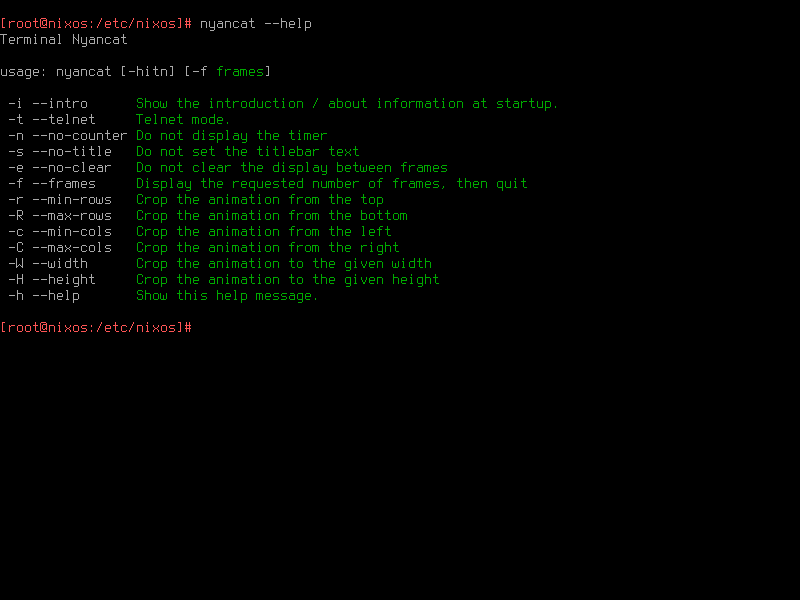

基础配置
Table of Contents
本文假设已经按照 NixOS 官方安装教程装好了一个系统
接下来主要介绍以下内容：
- NixOS 配置文件的基本格式和修改配置的方法
- Nix 包管理器的 Flake 功能
- Deploy-RS 部署工具
基础配置
在 NixOS 的安装过程中， nixos-generate-config 工具在 /etc/nixos 目录下生成了一份初始配置文件， configuration.nix 和 hardware-configuration.nix 两份文件。先不管 hardware-configuration.nix 这份文件，它是根据系统的硬件设备、硬盘分区等自动生成的配置文件。先打开 configuration.nix ：
# 为缩短长度，我去掉了配置文件中所有的注释 { config, pkgs, ... }: { imports = [ ./hardware-configuration.nix ]; boot.loader.grub.enable = true; boot.loader.grub.version = 2; boot.loader.grub.device = "/dev/sda"; networking.useDHCP = false; networking.interfaces.enp0s3.useDHCP = true; networking.interfaces.enp0s8.useDHCP = true; system.stateVersion = "21.05"; }
这个文件定义了整个 NixOS 系统，包括安装的软件包和它们的配置
这个文件是 Nix 格式的，也就是 NixOS 的 Nix 包管理器自创的一种 函数式编程 语言
但因为只是简单配置，还用不到它的编程特性。可以先忽略开头的 { config, pkgs, ... }: 一行，暂时把剩余部分当 JSON 看待
Nix 语言同样有着 JSON 的六大数据类型：数字，布尔值，字符串，对象，数组和 null，写法也大体相同。此外，Nix 语言还多了一种 路径 数据类型：
{
# 数字
number = 123456;
# 布尔值
boolean_value = true;
# 字符串
string = "lantian.pub";
# 对象
object = {
a = 1;
b = 2;
};
# 上面的对象也可以写成下面这样，是等价的：
object.a = 1;
object.b = 2;
# 数组
array = [
"first element"
"second element"
# 数组里也可以放对象：
({
a = 1;
b = 2;
})
];
# 路径，和字符串的区别是不加引号
#
# 注意：
#
# - 以路径格式指定的文件会在解析配置阶段被复制到 /nix/store 中，然后从那里调用
# 路径一般用来指定和配置文件一起管理的文件，例如你手写的某个程序的配置文件
#
# - 而以字符串方式指定的文件不会被复制，但其内容也就不是配置文件的一部分
# 它们不受 Nix 管理，内容也无法被 Nix 读取，但路径可以被原样写进配置文件，并被最终执行的程序读取
# 一般用来指定独立管理的文件，例如你的网站程序代码
file = ./somefile.txt; # 会被复制成 /nix/store/[哈希值]-somefile.txt
file2 = "./somefile.txt"; # 不会被 Nix 读取或处理
}
现在如果想安装一个 SSH 服务端以便远程登录，就可以添加这两行配置：
{ config, pkgs, ... }:
{
# ...
# 添加这两行
services.openssh.enable = true;
services.openssh.permitRootLogin = "yes";
# 或者也可以利用 Nix 对象的特性，写成这样
services.openssh = {
enable = true;
permitRootLogin = "yes";
};
# 或者这样
services = {
openssh = {
enable = true;
permitRootLogin = "yes";
};
};
# ...
}
services.openssh.permitRootLogin = "yes"; 这行允许了用密码登录 root 账户 因为我用的是一台不暴露在公网的虚拟机，比起安全我更注重方便。如果你的机器暴露在公网，不要加这行！
修改完配置后，运行 nixos-rebuild switch 重新配置系统，NixOS 会读取配置文件，自动下载 OpenSSH、生成配置文件并启动，然后就可以用 SSH 连接 22 端口来登录了
再举一个例子，如果想安装 nyancat 命令：
{ config, pkgs, ... }:
{
# ...
# 添加下面这几行
environment.systemPackages = [
# 这是个软件包的定义，不是一个字符串，而是一个对象
pkgs.nyancat
];
# 或者写成这样，with 命令指定直接引用 pkgs 里的内容，如果安装的包很多可以减小配置文件的长度
environment.systemPackages = with pkgs; [
nyancat
];
# ...
}
运行 nixos-rebuild switch，nyancat 命令就安装好了：

options
NixOS 官方的这份文档列出了 configuration.nix 里可以定义的所有配置项。因为是所有配置项，所以这个网页很长，打开网页的时候卡个几十秒也是很正常的事。也可以用 NixOS 官方搜索工具的 Options 页面搜索配置项：

或者在搜索工具的 Packages 页面搜索软件包：
配置文件是函数
刚才一直忽略了配置文件的第一行 { config, pkgs, ... }:
实际上，整个 configuration.nix 是一个 Nix 函数 ，这里的 config 和 pkgs 是 输入的参数 。NixOS 的函数定义如下所示：
# 这是一个函数，输入是一个参数 a，返回值是（a+1） a: a+1 # 这是一个函数，输入是一个参数 a，返回值是一个对象，对象有两个键值 a 和 b # 注意 Nix 语言没有变量概念！ # 假设输入 a = 1，那么返回对象为 { a = 2; b = 3; }，而非 { a = 2; b = 4; } a: { a = a + 1; b = a + 2; } # 这是一个函数，输入是一个对象，拥有键值 a 和 b，返回值是一个对象，拥有键值 a 和 b # 假设输入 { a = 1; b = 2; }，那么返回对象为 { a = 2; b = 1; } { a, b }: { a = b; b = a; } # 这个函数和前一个函数的作用相同，只是参数里多了 ... 代表可以接受（并忽略）它不认识的参数 # 假设输入为 { a = 1; b = 2; c = 3; } # 前一个函数不认识 c 所以会报错，但这个函数可以忽略 c 并正常工作 { a, b, ... }: { a = b; b = a; }
回头看安装 nyancat 命令的配置：
{ config, pkgs, ... }:
{
environment.systemPackages = [
pkgs.nyancat
];
}
- 它将 pkgs 参数（一个对象）的子对象 nyancat 加入了 environment.systemPackages 的列表中
pkgs 就是 NixOS 软件源中所有软件包的集合
对应 https://github.com/NixOS/nixpkgs 这个项目
类似的，config 参数是所有系统配置的集合
例如想要读取安装过的软件包的列表，就可以用 config.environment.systemPackages
Nix 语言是 惰性求值 Lazy Evaluate 的
最开始加载配置文件后，NixOS 什么都不会做 直到需要用到某个配置项（例如 environment.systemPackages），才会去解析它的值（这个数组，以及其中的对象 pkgs.nyancat）
顺便说一句，Nix 语言不支持循环引用
也就是类似 { a = config.b; b = config.a; } 这样的用法是不行的
会报错 infinite recursion encountered（遇到无限循环）
把配置分割到多个文件
当你使用了一段时间 NixOS 后，可能会安装一大堆的软件，导致配置文件变得很长，难以阅读
NixOS 支持在一个配置文件内 引用 import 其它的配置文件，这样你可以把一部分配置（例如桌面环境，nginx + PHP + MySQL，等等）单独放到一个文件中，方便后续查找。假设想把上面的 SSH 配置单独放到一个文件中。先创建 /etc/nixos/ssh.nix ：
{ config, pkgs, ... }:
{
services.openssh.enable = true;
services.openssh.permitRootLogin = "yes";
}
然后在 /etc/nixos/configuration.nix 中将 ssh.nix 加到 imports 中，并把原有的 SSH 配置删掉：
{ config, pkgs, ... }:
{
# ...
imports =
[
./hardware-configuration.nix
./ssh.nix
];
# ...
}
然后运行 nixos-rebuild switch，可以看到这次 rebuild 没有生成新的东西，也没有启动/停止任何服务。这是因为只是把 SSH 的配置挪到了新的文件中，实际的配置并没有发生变化。

接下来简单解释一下 imports 的原理。可以看到 configuration.nix 这个函数有参数 config，pkgs，和一些被我们忽略掉的参数（…）。NixOS 会用 相同的 参数 （包括忽略掉的和没忽略的）去 调用 imports 里的每个文件 ，然后把 返回的配置 和 当前配置 合并 。回头看 ssh.nix，可以发现它并没有用到 config 和 pkgs 两个函数，因此把它们去掉也是可以的：
# 可以把 config 和 pkgs 去掉 { ... }: { services.openssh.enable = true; services.openssh.permitRootLogin = "yes"; } # 甚至直接去掉所有参数也是可以的，imports 比较智能 { services.openssh.enable = true; services.openssh.permitRootLogin = "yes"; }
Flake
由于 NixOS 的所有配置都由 configuration.nix 决定，可以把这些文件直接复制到另一台机器上，然后运行 nixos-rebuild switch ，就可以得到一个一模一样的系统：
NixOS 的一大特点是，用一份 Nix 配置文件管理系统上的所有配置文件和软件包 因此，可以用 Ansible，Rsync，甚至是 Git 等任何喜欢的工具，来专门管理 /etc/nixos 这里一处的配置文件 由于只有这一处配置文件，不需要写一大堆复杂的 Ansible Playbook，或者输入几十行 Rsync 命令，只需要直接覆盖 /etc/nixos，再运行 nixos-rebuild switch 完事
但现在要告诉你，*刚才说的都是错的* 。前面介绍了修改系统配置和安装软件包的方法，但唯独没有提到如何 升级 软件包。这是因为 NixOS 的软件源是由另外一个命令 nix-channel 管理的：

其中 nix-channel –list 命令列出了当前配置的软件源列表，nix-channel –update 用来将软件源更新到最新。但是，nix-channel 的配置不归 configuration.nix 管，configuration.nix 也无法定义软件源的 URL 和版本
也就是说，由于软件源在不断更新，在一个月前和一个月后用同一份配置文件装出来的系统，可能会有软件版本的差异 这就与 NixOS 一直宣传的 “一份配置管天下” 冲突了
为了解决这个问题，Nix 引入了 Flake 功能，它支持了在配置文件中定义软件源 URL 版本的功能。先修改 configuration.nix 并 nixos-rebuild switch，将 Nix 包管理器升级到支持 Flake 的测试版：
{ config, pkgs, ... }:
{
# ...
nix = {
package = pkgs.nixUnstable;
extraOptions = ''
experimental-features = nix-command flakes
'';
};
# ...
}
本文写成时 NixOS 的最新稳定版本是 21.05，其 Nix 包管理器（2.3 版本）还默认禁用 Flake 功能 NixOS 21.11 及以后的版本将默认开启 Flake 功能，届时将不需要这里对 configuration.nix 的修改 由于担心 Nix 2.4 功能变化过大，尤其是会与旧版 Nix 的行为不兼容，NixOS 21.11 仍将使用 Nix 2.3，将默认禁用 Flake 功能 相关讨论在 https://discourse.nixos.org/t/nix-2-4-and-what-s-next/16257 和 https://github.com/NixOS/nixpkgs/pull/147511
然后在 /etc/nixos 里创建一个 flake.nix 文件。这份 flake.nix 定义了一个 软件源 input ，是 nixpkgs 的 unstable 分支（也就是 master 分支）
{
# 文件描述，随便写，或者不写也可以
description = "Lan Tian's NixOS Flake";
# 输入配置，即软件源
inputs = {
# Nixpkgs，即 NixOS 官方软件源
nixpkgs.url = "github:NixOS/nixpkgs/nixos-unstable";
};
# 输出配置，即 NixOS 系统配置
outputs = { self, nixpkgs, ... }@inputs: {
# 定义一个名为 nixos 的系统
nixosConfigurations."nixos" = nixpkgs.lib.nixosSystem {
system = "x86_64-linux";
modules = [
./configuration.nix
];
};
# 你也可以在同一份 Flake 中定义好几个系统，NixOS 会根据主机名 Hostname 决定用哪个
# nixosConfigurations."nixos2" = nixpkgs.lib.nixosSystem {
# system = "x86_64-linux";
# modules = [
# ./configuration2.nix
# ];
# };
};
}
然后运行 nix flake update ：
[root@nixos:/etc/nixos]# nix flake update
warning: creating lock file '/etc/nixos/flake.lock'
生成了一个 flake.lock 文件，是一个 JSON：
{
"nodes": {
"nixpkgs": {
"locked": {
"lastModified": 1636623366,
"narHash": "sha256-jOQMlv9qFSj0U66HB+ujZoapty0UbewmSNbX8+3ujUQ=",
"owner": "NixOS",
"repo": "nixpkgs",
"rev": "c5ed8beb478a8ca035f033f659b60c89500a3034",
"type": "github"
},
"original": {
"owner": "NixOS",
"ref": "nixos-unstable",
"repo": "nixpkgs",
"type": "github"
}
},
"root": {
"inputs": {
"nixpkgs": "nixpkgs"
}
}
},
"root": "root",
"version": 7
}
flake.lock 指定了 nixpkgs 的 commit 编号和 SHA256 哈希值，这样即使这份配置文件被复制到其它机器上 其它机器的 Nix 包管理器也会下载这个特定版本的 nixpkgs 软件源，并安装对应版本的软件，真正做到了软件版本一模一样
最后运行 nixos-rebuild switch 命令，NixOS 会自动优先读取 flake.nix 而非 configuration.nix，把系统里的所有软件包升级（或降级）到这个特定的版本。但因为把 configuration.nix 加入了 flake.nix 的 modules 数组，所以系统配置还是保持不变：
如果开启了 Flake 功能，并使用 Git 管理你的文件，注意： NixOS 会忽略未被 Git 管理的文件，只会读取已经 Stage 或 Commit 过的文件 如果你新建了一个文件，记得把它 Stage 一下，否则 NixOS 会报找不到文件的错误
使用 Deploy-RS 批量部署
现在配置好了一台机器。但如果有 10 台机器。当然可以自己写一个 Ansible 脚本把配置复制到所有机器的 /etc/nixos 文件夹再 nixos-rebuild switch，但是这有几个问题：
如果软件源里的某个软件包没有预编译的二进制文件，就得在所有机器上编译一遍。但因为买的都是资源不是很多的便宜 VPS，很容易遇到内存不足或者 CPU 占用过高被主机商关机的问题
NixOS 的软件源有点类似于 Gentoo。与其它 Linux 发行版不同，一个软件包在 NixOS 软件源里不代表它有二进制文件 NixOS 的「软件包」是一组 Nix 语言的定义，描述了下载、编译、打包一个软件的完整流程 一般情况下，NixOS 官方会帮我们编译好软件，然后上传到二进制缓存（Binary Cache）供我们下载 但如果我们自己改了软件包的编译流程（一般是一些编译参数）或者干脆是自己打的包（后面文章中会介绍），就得自己编译了
- Nix 包管理器解析配置文件的过程本身就会占用不少的内存和 CPU 资源，尤其是配置较复杂的时候
理想情况下，可以用一台高性能机器（例如我的个人电脑，或者独立服务器）解析配置文件，下载或编译好所有软件包和配置，再把它们上传到所有机器上启用 这样就不用消耗低性能 VPS 的资源了。而这就是 Deploy-RS 部署工具的功能
要使用 Deploy-RS，首先要找一台装了 Nix 的机器：
# 复制自 https://nixos.org/download.html curl -L https://nixos.org/nix/install | sudo sh
注意没有要求你把这台机器重装成 NixOS，因为 Nix 包管理器是可以安装在其它 Linux 发行版上的 例如我用的是运行 Arch Linux 的个人电脑，就可以根据 Arch Linux Wiki 上的教程安装 其它发行版可以用 Nix 官方的一键安装脚本
然后要在这台机器上启用 Nix Flake 功能：
nix-env -iA nixpkgs.nixFlakes echo "experimental-features = nix-command flakes" >> /etc/nix/nix.conf systemctl restart nix-daemon
回到上一节创建的 flake.nix 文件，要添加 Deploy-RS 的软件源，并在 outputs 中添加 SSH 连接的配置：
{
description = "Lan Tian's NixOS Flake";
inputs = {
nixpkgs.url = "github:NixOS/nixpkgs/nixos-unstable";
# 新增下面几行
deploy-rs = {
url = "github:serokell/deploy-rs";
inputs.nixpkgs.follows = "nixpkgs";
};
};
outputs = { self, nixpkgs, ... }@inputs: {
nixosConfigurations."nixos" = nixpkgs.lib.nixosSystem {
system = "x86_64-linux";
modules = [
./configuration.nix
];
};
# 新增下面几行
deploy = {
sshUser = "root"; # SSH 登录用户名
user = "root"; # 远程操作的用户
sshOpts = [ "-p" "2222" ]; # SSH 参数，这里是指定端口 2222
# 部署失败自动回滚，建议关闭
# 因为 NixOS（尤其是 Unstable 分支）部署不太稳定，有时需要部署两次才成功
# 如果自动回滚了，反而适得其反，导致连续部署失败
autoRollback = false;
# 断网自动回滚，建议关闭
# 在你配置防火墙或 IP 出错把网络干掉时，自动回滚，这样你就不用去主机商控制面板连 VNC 或 IPMI 了
# 但如果你就是在调整防火墙或者 IP 配置，会有当时断网、但重启机器就可以应用新配置恢复正常的情况
# 自动回滚反而适得其反，因此建议关闭
magicRollback = false;
nodes = {
"nixos" = {
# 目标机器的地址，IP 或域名或 .ssh/config 中配置的别名均可
hostname = "192.168.56.105";
profiles.system = {
# 调用上面的 nixosConfigurations."nixos"
path = deploy-rs.lib.x86_64-linux.activate.nixos self.nixosConfigurations."nixos";
};
};
};
};
};
}
最后执行 nix run github:serokell/deploy-rs – -s . 运行 Deploy-RS 即可
在甲骨文 ARM 云服务器上使用 NixOS
NixOS 也支持 ARM64v8 架构，也就是甲骨文 ARM 云服务器的架构 因为甲骨文 ARM 云服务器实际上是一个 KVM 虚拟机，没有其它的特殊硬件，所以可以直接用 NixOS-Infect 将现有系统替换成 NixOS
相比 x86 机器，只需要在 flake.nix 中将对应的 system 改为 aarch64-linux ：
{
# ...
outputs = { self, nixpkgs, ... }@inputs: {
nixosConfigurations."oracle-vm-arm" = nixpkgs.lib.nixosSystem {
system = "aarch64-linux";
modules = [
./configuration-oracle-vm-arm.nix
];
};
};
# ...
}
其它配置都与 x86 机器无异。但是如果使用 Deploy-RS 想在本地生成配置，会发现 Nix 包管理器报错，显示当前机器不支持 ARM 架构
此时可以在本地机器上安装 qemu-user-static 和相应的 binfmt 配置，让本地系统可以用 模拟 的方式运行 ARM 架构的程序
- 对于 Arch Linux，需要从 AUR 安装 qemu-user-static 和 binfmt-qemu-static-all-arch 两个包
- 对于 Debian，需要安装 qemu-user-static 软件包。
安装完成后还需要修改 /etc/nix/nix.conf ，添加这一行配置，告诉 Nix 包管理器当前机器可以运行 ARM 程序：
extra-platforms = aarch64-linux arm-linux
然后重启 Nix Daemon systemctl restart nix-daemon ，Deploy-RS 就可以使用了